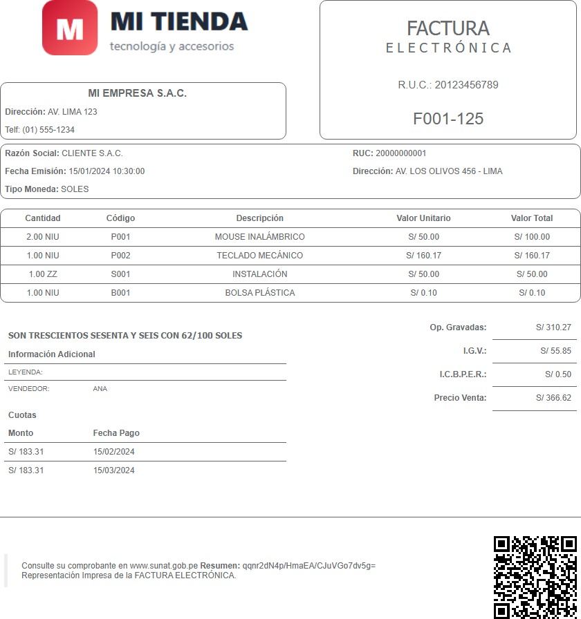
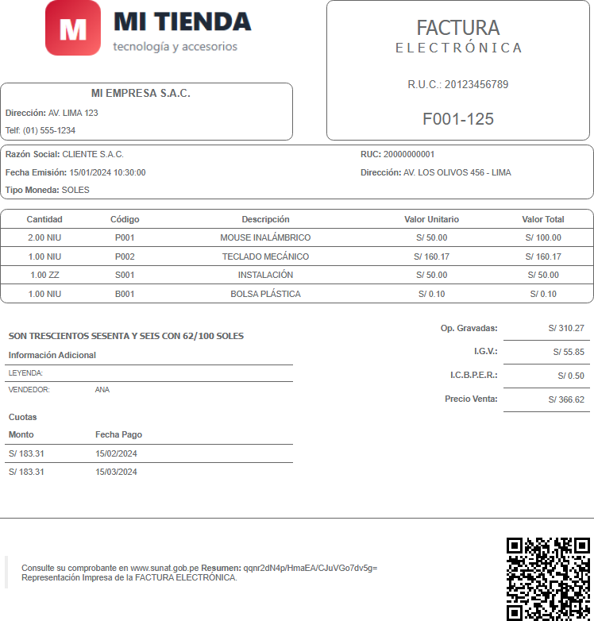
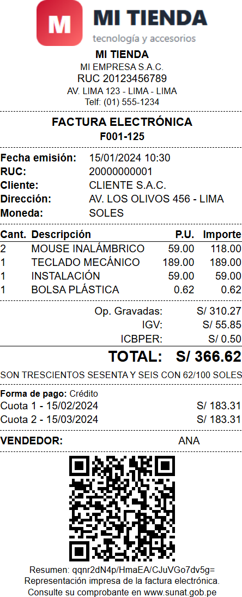
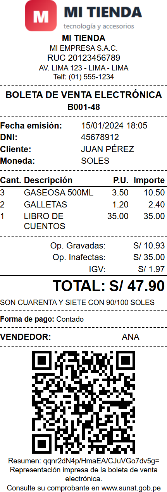
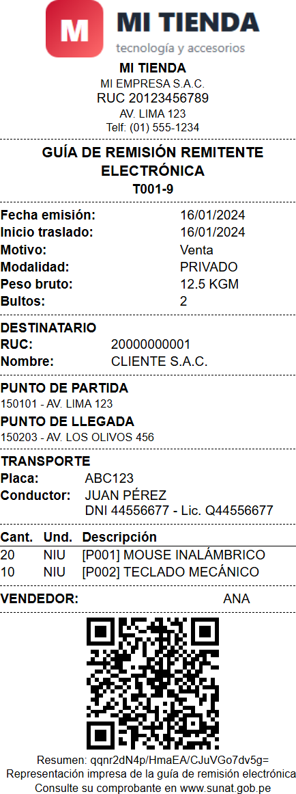
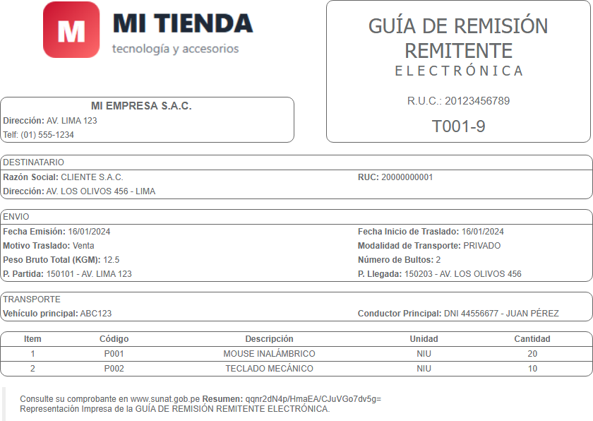

Representación impresa: PDF y tickets
La representación impresa es lo que entregas al cliente. La librería genera el HTML con código QR, hash de la firma y todos los datos; luego lo conviertes a PDF o lo mandas a una ticketera.
Formatos disponibles
Haz clic en una imagen para verla completa. Son capturas reales generadas por la librería.






| Formato | Valor | Documentos |
|---|---|---|
| A4 | 'A4' (defecto) | Todos |
| A5 | 'A5' | Facturas, boletas, notas, guías, retenciones, percepciones |
| Ticket 80 mm | '80mm' o 'ticket' | Facturas, boletas, notas, guías |
| Ticket 58 mm | '58mm' | Facturas, boletas, notas, guías |
| Ticket 50 mm | '50mm' | Facturas, boletas, notas, guías |
Generar el HTML
import fs from 'node:fs';
import { HtmlReport, DefaultTemplateResolver, XmlUtils } from '@jeanpierohc/sunat-manager';
const report = new HtmlReport();
report.setTemplate(new DefaultTemplateResolver().getTemplate(factura, '80mm'));
const html = report.render(factura, {
system: {
logo: fs.readFileSync('logo.png'), // opcional (PNG/JPG)
hash: new XmlUtils().getHashSign(xmlFirmado), // resumen de la firma
},
user: {
header: 'Telf: (01) 555-1234 · ventas@mitienda.pe', // HTML permitido
footer: 'Gracias por su compra',
extras: [{ name: 'Vendedor', value: 'ANA' }, { name: 'Condición', value: 'Contado' }],
},
});El xmlFirmado lo obtienes con see.getFactory().getLastXml() después de enviar, o con
see.getXmlSigned(doc).
Parámetros
| Parámetro | Descripción |
|---|---|
system.logo | Buffer de la imagen del logo |
system.hash | Valor resumen (DigestValue) de la firma |
system.qr | Guías: URL o texto del QR que devuelve SUNAT en el CDR |
user.header | HTML bajo los datos de la empresa |
user.footer | HTML al pie |
user.extras | Filas adicionales [{ name, value }] |
user.numIGV | Porcentaje de IGV a mostrar (A4) |
Convertir a PDF
Usa Chrome sin interfaz. Instala npm install puppeteer. En los tickets se mide el alto real del
contenido para obtener una sola página del largo exacto:
import puppeteer from 'puppeteer';
import { PdfReport } from '@jeanpierohc/sunat-manager';
const browser = await puppeteer.launch();
const pdf = new PdfReport(report, async (html) => {
const page = await browser.newPage();
await page.setContent(html, { waitUntil: 'load' });
let buffer;
if (await page.$('.ticket')) {
// tickets: ancho del papel y alto del contenido
const { width, height } = await page.evaluate(() => {
const r = document.querySelector('.ticket').getBoundingClientRect();
return { width: r.width, height: r.height };
});
buffer = await page.pdf({ width: `${Math.ceil(width)}px`, height: `${Math.ceil(height) + 2}px`, printBackground: true, pageRanges: '1' });
} else {
// A4 / A5: tamaño definido por la plantilla
buffer = await page.pdf({ preferCSSPageSize: true, printBackground: true });
}
await page.close();
return Buffer.from(buffer);
});
fs.writeFileSync('factura.pdf', await pdf.render(factura, params));
// al terminar tu proceso: await browser.close();Igual que Greenter PHP. Requiere instalar wkhtmltopdf:
import { PdfReport } from '@jeanpierohc/sunat-manager';
const pdf = new PdfReport(report);
pdf.setBinPath('C:/Program Files/wkhtmltopdf/bin/wkhtmltopdf.exe'); // en Linux suele estar en el PATH
pdf.setFormat('80mm', { height: '200mm' }); // tamaño de página
const buffer = await pdf.render(factura, params);
if (!buffer) console.error(pdf.getExporter().getError());wkhtmltopdf no admite alto automático: en tickets
ajusta height según la cantidad de ítems, o usa Puppeteer.
Para ticketeras térmicas muchas veces basta con abrir el HTML e imprimir desde el navegador (Ctrl+P) eligiendo la impresora térmica y su tamaño de papel, sin márgenes. El ancho del ticket ya está definido en la plantilla.
El código QR
El QR que exige SUNAT contiene, separados por |:
RUC | TIPO | SERIE | NÚMERO | IGV | TOTAL | FECHA | TIPO DOC. CLIENTE | NÚM. DOC. CLIENTE |
20123456789|01|F001|125|55.85|366.62|2024-01-15|6|20000000001|Plantillas propias
Las plantillas usan sintaxis Twig. Copia una de
node_modules/@jeanpierohc/sunat-manager/src/report/templates a tu proyecto, modifícala y pasa la carpeta:
las tuyas tienen prioridad.
const report = new HtmlReport('./mis-plantillas');
report.setTemplate('mi-ticket.html.twig');Variables disponibles: doc (el comprobante) y params. Filtros: n_format,
catalog('01'), image_b64, date('d/m/Y'). Funciones: qrCode(doc),
legend(doc.legends, '1000').